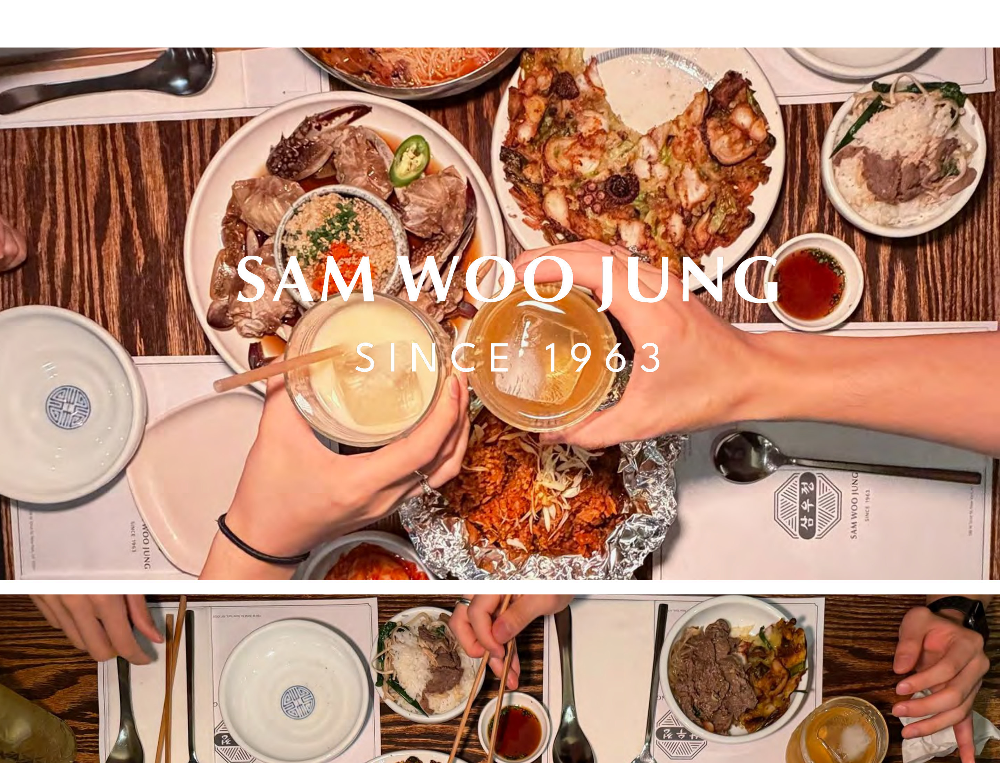
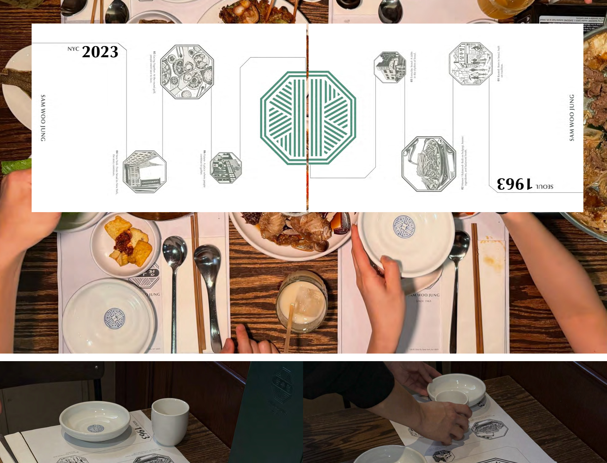
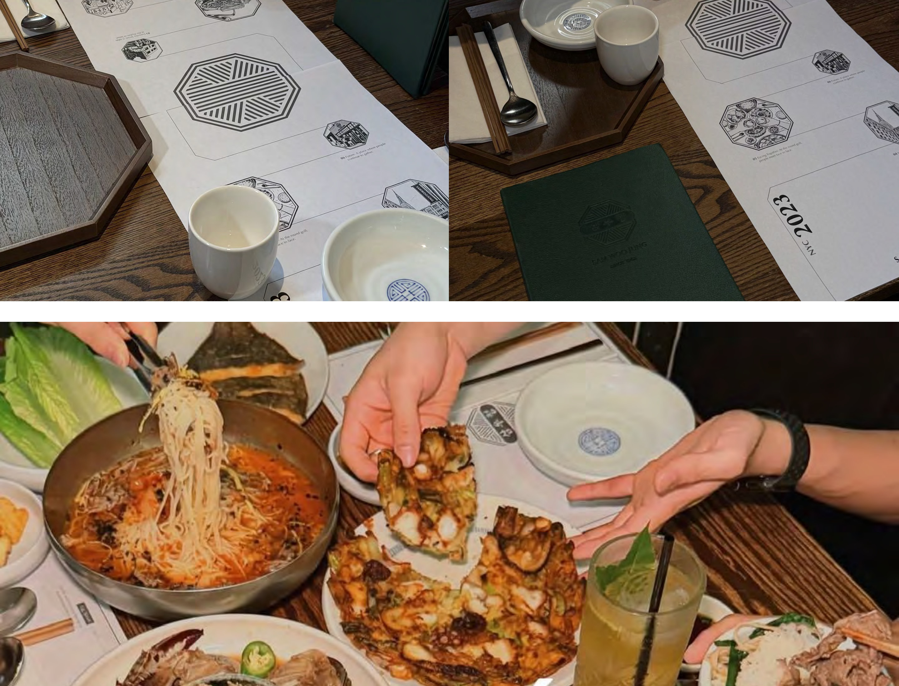
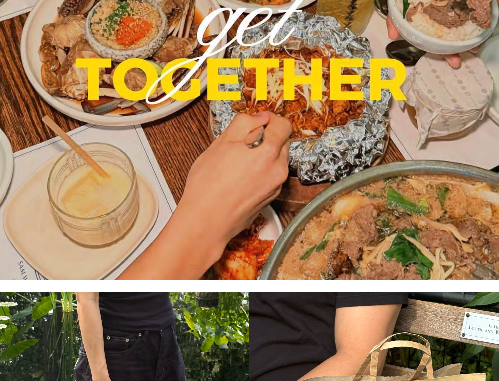
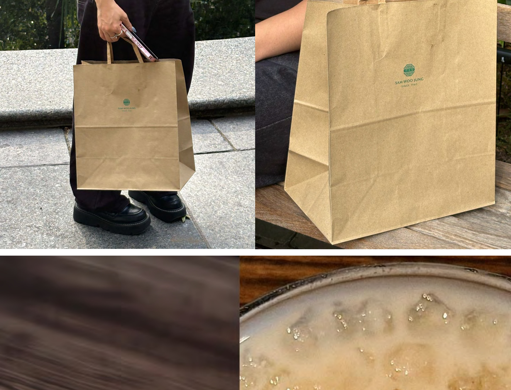
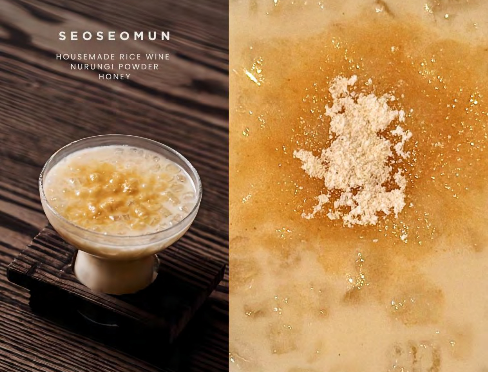
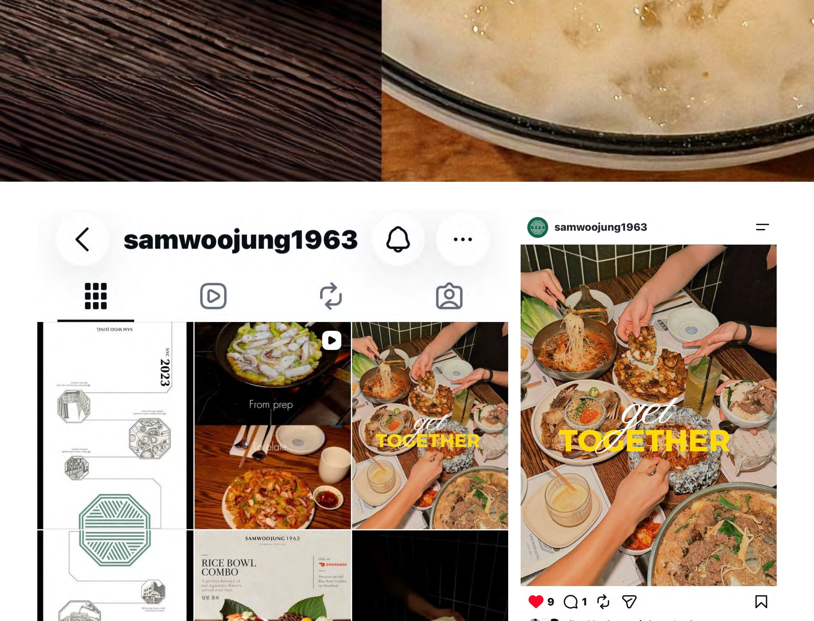
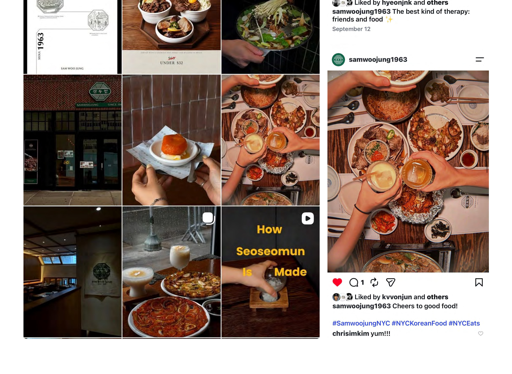

A rebranding project for SamWooJung, a Seoul-style bulgogi restaurant established in 1963. The identity reinterprets the restaurant’s heritage through a contemporary system of octagonal forms, custom illustrations, and timeline-based storytelling. Applied across table mats, in-store graphics, and social media, the system connects SamWooJung’s past, present, and future around one shared table.







